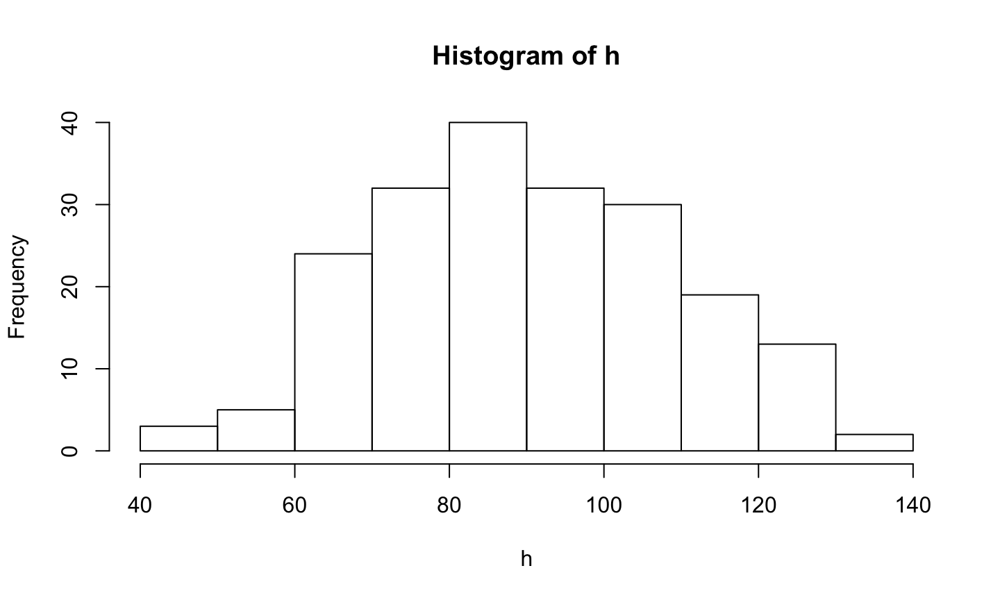
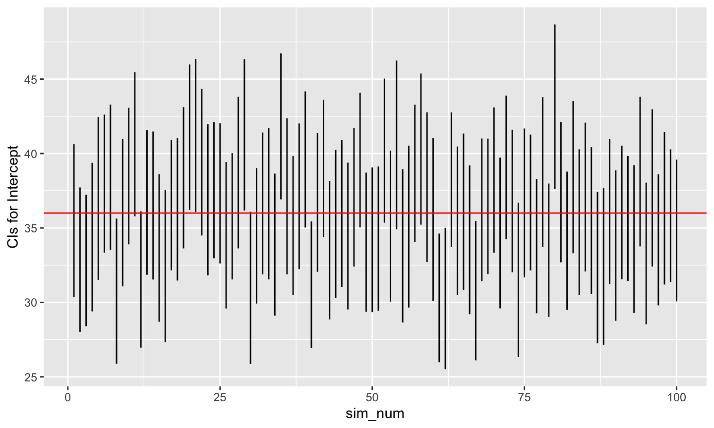
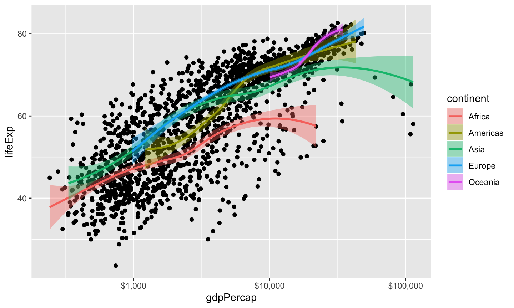
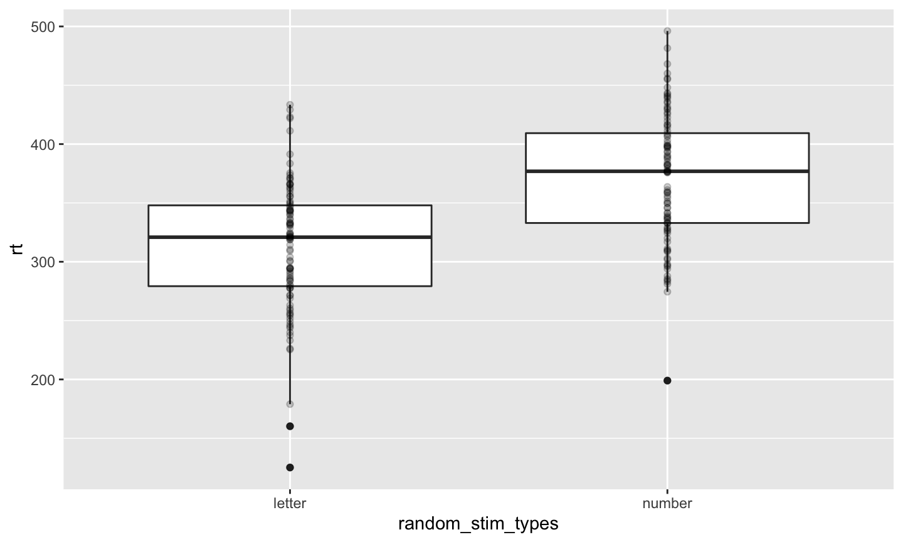

2020-02-18 08:26:55
write privileges, I don’t have to issue a pull request.##Header vs. ## Header# choose sample size sample_n <- 200 # choose intercept and slope beta0 <- 36 # inches beta1 <- 0.33 # Rick's guess # choose standard deviation for error sigma <- 10 # Rick's guess
# random weights between 80 lbs and 250 lbs (uniform sampling) w <- runif(n = sample_n, min = 80, max = 250) h_pred <- rep(x = beta0, n = sample_n) + beta1 * w h <- h_pred + rnorm(n = sample_n, mean = 0, sd = sigma)
library(ggplot2) library(dplyr) hist(w)
hist(h)

hist(h_pred)
# Put h and w into data frame for ggplot height_weight <- data.frame(inches = h, lbs = w) # Plot scatter_1 <- ggplot2::ggplot(data = height_weight) + ggplot2::aes(x = lbs, y = inches) + ggplot2::geom_point() scatter_1
# Could use the raw data # cor.test(x = w, y = h) # Or, to use the values in the data frame, use with(...) with(height_weight, cor.test(x = inches, y = lbs))
## ## Pearson's product-moment correlation ## ## data: inches and lbs ## t = 21.472, df = 198, p-value < 2.2e-16 ## alternative hypothesis: true correlation is not equal to 0 ## 95 percent confidence interval: ## 0.7892534 0.8737537 ## sample estimates: ## cor ## 0.8364064
# Save output as a variable cor_test_inches_lbs <- with(height_weight, cor.test(x = inches, y = lbs)) # What sort of beast is this? mode(cor_test_inches_lbs)
## [1] "list"
# Aha, it's a list, this shows me all of the parts unlist(cor_test_inches_lbs)
## statistic.t ## "21.4724896345742" ## parameter.df ## "198" ## p.value ## "1.33502059642752e-53" ## estimate.cor ## "0.836406407472453" ## null.value.correlation ## "0" ## alternative ## "two.sided" ## method ## "Pearson's product-moment correlation" ## data.name ## "inches and lbs" ## conf.int1 ## "0.789253416341088" ## conf.int2 ## "0.873753662658475"
# Looks like the t value is the first element cor_test_inches_lbs[[1]]
## t ## 21.47249
The Pearson’s product-moment correlation correlation between height and weight is 0.836, \(t\)(198)=21.472, \(p\)=0.00000, with a 95\(\%\) confidence interval of [0.789, 0.874].
I did some formatting using the sprintf() function to make the numbers look pretty. You may also find format() useful.
sprintf("%.3f", my.var) limits my.var to 3 decimal places; where sprintf("%2.3f", my.var) limits it to 2 digits to the left and 3 to the right.
fit <- lm(formula = inches ~ lbs, data = height_weight) summary(fit) # Use lm() command to fit formula
## ## Call: ## lm(formula = inches ~ lbs, data = height_weight) ## ## Residuals: ## Min 1Q Median 3Q Max ## -37.103 -7.520 0.850 6.759 29.707 ## ## Coefficients: ## Estimate Std. Error t value Pr(>|t|) ## (Intercept) 38.58790 2.51316 15.35 <2e-16 *** ## lbs 0.32149 0.01497 21.47 <2e-16 *** ## --- ## Signif. codes: ## 0 '***' 0.001 '**' 0.01 '*' 0.05 '.' 0.1 ' ' 1 ## ## Residual standard error: 10.44 on 198 degrees of freedom ## Multiple R-squared: 0.6996, Adjusted R-squared: 0.6981 ## F-statistic: 461.1 on 1 and 198 DF, p-value: < 2.2e-16
(ci <- confint(fit)) # confint() command fits confidence intervals
## 2.5 % 97.5 % ## (Intercept) 33.6319130 43.5438961 ## lbs 0.2919663 0.3510174
Surrounding (ci <- confint(fit)) in parentheses saves variable ci and prints it out.
| Parameter | Actual | Low Estimate | High Estimate |
|---|---|---|---|
| \(\beta0\) | 36 | 33.631913 | 43.5438961 |
| \(\beta1\) | 0.33 | 0.2919663 | 0.3510174 |
# random weights between 80 lbs and 250 lbs (uniform sampling) w <- runif(n = sample_n, min = 80, max = 250) h_pred <- rep(x = beta0, n = sample_n) + beta1 * w h <- h_pred + rnorm(n = sample_n, mean = 0, sd = sigma) height_weight <- data.frame(inches = h, lbs = w) fit <- lm(formula = inches ~ lbs, data = height_weight) summary(fit)
## ## Call: ## lm(formula = inches ~ lbs, data = height_weight) ## ## Residuals: ## Min 1Q Median 3Q Max ## -24.8229 -7.5843 0.0817 6.1271 29.6438 ## ## Coefficients: ## Estimate Std. Error t value Pr(>|t|) ## (Intercept) 34.88577 2.48984 14.01 <2e-16 *** ## lbs 0.33834 0.01465 23.09 <2e-16 *** ## --- ## Signif. codes: ## 0 '***' 0.001 '**' 0.01 '*' 0.05 '.' 0.1 ' ' 1 ## ## Residual standard error: 9.794 on 198 degrees of freedom ## Multiple R-squared: 0.7293, Adjusted R-squared: 0.7279 ## F-statistic: 533.4 on 1 and 198 DF, p-value: < 2.2e-16
(ci <- confint(fit)) # saves in variable ci and prints
## 2.5 % 97.5 % ## (Intercept) 29.9757671 39.7957796 ## lbs 0.3094516 0.3672307
| Parameter | Actual | Low Estimate | High Estimate |
|---|---|---|---|
| \(\beta0\) | 36 | 29.9757671 | 39.7957796 |
| \(\beta1\) | 0.33 | 0.3094516 | 0.3672307 |
eegkit R package has eegsim functionplot(x,y) hist(x), coplot()ggplot2
plot() takes many types of inputsummary()ggplot2gg refers to the Grammar of GraphicsWilkinson, L., Wills, D., Rope, D., Norton, A., & Dubbs, R. (2005). The Grammar of Graphics (Statistics and Computing) (2nd edition.). Springer. Retrieved from https://www.amazon.com/Grammar-Graphics-Statistics-Computing/dp/0387245448
ggplot2 is the package; ggplot() is the function call+ operatorggplotmy_function_name <- function(my_param1, my_param2 = "cool")# define global constants from prior simulation sample_n = 200 beta0 = 36 beta1 = .33 sigma = 10 min_x = 80 max_x = 250
height_weight_sim <- function(sample_n = 200, beta0 = 36, beta1 = .33, sigma = 10, min_x = 80, max_x = 250) {
# Calculates correlation, intercept, slope estimates for
# linear relation between two variables
# Args:
# sample_n: Number of sample poings, default is 200
# beta0: Intercept, default is 36 (inches)
# beta1: Slope, default is .33
# sigma: Standard deviation of error
# min_x: Minimum value for x (weight in lbs)
# max_x: Maximum value for x (weight in lbs)
#
# Returns:
# Named array with values
# beta0
# beta1
# beta0.lo: 2.5% quantile for intercept
# beta0.hi 97.5% quantile for intercept
# beta1.lo 2.5% quantile for slope
# beta1.hi 97.5% quantile for slope
w <- runif(n = sample_n, min = min_x, max = max_x)
h_pred <- rep(x = beta0, n = sample_n) + beta1 * w
h <- h_pred + rnorm(n = sample_n, mean = 0, sd = sigma)
height.weight <- data.frame(inches = h, lbs = w)
fit <- lm(formula = inches ~ lbs, data = height.weight)
ci <- confint(fit)
# Create output vector with named values
(results <- c("beta0" = beta0,
"beta1"= beta1,
"beta0.lo" = ci[1,1],
"beta0.hi" = ci[1,2],
"beta1.lo" = ci[2,1],
"beta1.hi" = ci[2,2]))
}
# Defaults only height_weight_sim()
## beta0 beta1 beta0.lo beta0.hi beta1.lo ## 36.0000000 0.3300000 30.6497291 40.0010555 0.3066327 ## beta1.hi ## 0.3610621
# Larger sample size height_weight_sim(sample_n = 500)
## beta0 beta1 beta0.lo beta0.hi beta1.lo ## 36.0000000 0.3300000 33.3918123 39.6015099 0.3081033 ## beta1.hi ## 0.3444201
n_simulations = 100
n_vars = 6 # variables height_weight_sim() outputs
# initialize output array
height_weight_sim_data <- array(0, dim=c(n_simulations, n_vars))
# Repeat height_weight_sim() n_simulations times
for (i in 1:n_simulations) {
height_weight_sim_data[i,] <- height_weight_sim()
}
# Easier to make simulation data a data frame
ht_wt_sims <- as.data.frame(height_weight_sim_data)
# rename variables to be more easily read
names(ht_wt_sims) <- c("beta0", "beta1",
"beta0.lo", "beta0.hi",
"beta1.lo", "beta1.hi")
# Add a variable to index the simulation number
ht_wt_sims$sim_num <- 1:n_simulations
# Plot beta0 min and max (now called V3, V4)
ggplot(data = ht_wt_sims) +
aes(x = sim_num) +
geom_linerange(mapping = aes(ymin = beta0.lo,
ymax = beta0.hi)) +
ylab("CIs for Intercept") +
geom_hline(yintercept = beta0, color = "red")

# Plot beta1 min and max (now called V5, V6)
ggplot(data = ht_wt_sims) +
aes(x = sim_num) +
geom_linerange(mapping = aes(ymin = beta1.lo,
ymax = beta1.hi)) +
ylab("CIs for Slope") +
geom_hline(yintercept = beta1, color = "red")

# Simulation parameters
n_subs = 30
trials_per_cond = 100
letters_numbers_rt_diff = 50 # ms
rt_mean_across_subs = 350
sigma = 50
cond_labels = c("letter", "number")
cond_rts <- c("letter" = 0, "number" = letters_numbers_rt_diff)
stim_types <- factor(x = rep(x = c(1,2),
trials_per_cond),
labels = cond_labels)
#sample(factor(x=rep(c("letter", "number"), 100)), 200)
random_stim_types <- sample(stim_types, trials_per_cond*length(cond_labels))
mean_sub_rt <- rnorm(n = 1, mean = rt_mean_across_subs, sd = sigma)
trial_rt <- array(0, dim = length(random_stim_types))
# Generate RTs based on trial, condition
for (t in 1:length(random_stim_types)) {
trial_rt[t] <- mean_sub_rt + cond_rts[random_stim_types[t]] +
rnorm(n = 1, mean = 0, sd = sigma)
}
# Make data frame
letter_number_df <- data.frame(trial = 1:length(random_stim_types),
stim = random_stim_types,
rt = trial_rt)
letter_number_df %>%
ggplot(.) +
aes(x = random_stim_types, y = rt) +
geom_boxplot() +
geom_point(alpha = .2)

simulate_sub_rt <- function(trials_per_cond = 100,
letters_numbers_rt_diff = 50,
rt_mean_across_subs = 350,
sigma = 50) {
cond_rts <- c("letter" = 0,
"number" = letters_numbers_rt_diff)
stim_types <- factor(x = rep(x = c(1,2),
trials_per_cond),
labels = c("letter", "number"))
random_stim_types <- sample(stim_types, 2*trials_per_cond)
mean_sub_rt <- rnorm(n = 1,
mean = rt_mean_across_subs,
sd = sigma)
trial_rt <- array(0, dim = length(random_stim_types))
# Generate RTs based on trial, condition
for (t in 1:length(random_stim_types)) {
trial_rt[t] <- mean_sub_rt + cond_rts[random_stim_types[t]] +
rnorm(n = 1, mean = 0, sd = sigma)
}
# Make data frame
letter.number.df <- data.frame(trial = 1:length(random_stim_types),
stim = random_stim_types,
rt = trial_rt)
}
make_sub_rt_df <- function(sub.id) {
sub_rt_df <- simulate_sub_rt()
sub_rt_df$sub.id <- sub.id
sub_rt_df
}
# Use lapply to make separate data frames for all subs
sub_rt_df_list <- lapply(1:n_subs, make_sub_rt_df)
# Use Reduce() with the merge function to make one big file
sub_rt_df_merged <- Reduce(function(x, y) merge(x, y, all=TRUE), sub_rt_df_list)
ggplot(data = sub_rt_df_merged) +
aes(x=stim, y=rt, color=stim) +
geom_boxplot() +
facet_grid(facets = . ~ as.factor(sub.id)) +
theme(axis.text.x.bottom = element_blank(),
axis.ticks.x.bottom = element_blank())
library(lme4) fit1 <- lmer(formula = rt ~ stim + (1|sub.id), data = sub_rt_df_merged) summary(fit1)
## Linear mixed model fit by REML ['lmerMod'] ## Formula: rt ~ stim + (1 | sub.id) ## Data: sub_rt_df_merged ## ## REML criterion at convergence: 64209.2 ## ## Scaled residuals: ## Min 1Q Median 3Q Max ## -4.0626 -0.6703 0.0011 0.6620 3.3775 ## ## Random effects: ## Groups Name Variance Std.Dev. ## sub.id (Intercept) 3081 55.51 ## Residual 2535 50.35 ## Number of obs: 6000, groups: sub.id, 30 ## ## Fixed effects: ## Estimate Std. Error t value ## (Intercept) 347.26 10.18 34.13 ## stimnumber 50.62 1.30 38.94 ## ## Correlation of Fixed Effects: ## (Intr) ## stimnumber -0.064
fit2 <- aov(formula = rt ~ stim + Error(as.factor(sub.id)), data = sub_rt_df_merged) summary(fit2)
## ## Error: as.factor(sub.id) ## Df Sum Sq Mean Sq F value Pr(>F) ## Residuals 29 17943263 618733 ## ## Error: Within ## Df Sum Sq Mean Sq F value Pr(>F) ## stim 1 3843699 3843699 1516 <2e-16 *** ## Residuals 5969 15131695 2535 ## --- ## Signif. codes: ## 0 '***' 0.001 '**' 0.01 '*' 0.05 '.' 0.1 ' ' 1
This talk was produced on 2020-02-18 in RStudio using R Markdown. The code and materials used to generate the slides may be found at https://github.com/psu-psychology/psy-525-reproducible-research-2020. Information about the R Session that produced the code is as follows:
## R version 3.6.2 (2019-12-12) ## Platform: x86_64-apple-darwin15.6.0 (64-bit) ## Running under: macOS Mojave 10.14.6 ## ## Matrix products: default ## BLAS: /System/Library/Frameworks/Accelerate.framework/Versions/A/Frameworks/vecLib.framework/Versions/A/libBLAS.dylib ## LAPACK: /Library/Frameworks/R.framework/Versions/3.6/Resources/lib/libRlapack.dylib ## ## locale: ## [1] en_US.UTF-8/en_US.UTF-8/en_US.UTF-8/C/en_US.UTF-8/en_US.UTF-8 ## ## attached base packages: ## [1] stats graphics grDevices utils datasets ## [6] methods base ## ## other attached packages: ## [1] knitr_1.27 DiagrammeR_1.0.5 forcats_0.4.0 ## [4] stringr_1.4.0 purrr_0.3.3 readr_1.3.1 ## [7] tidyr_1.0.0 tibble_2.1.3 tidyverse_1.3.0 ## [10] lme4_1.1-21 Matrix_1.2-18 dplyr_0.8.3 ## [13] ggplot2_3.2.1 ## ## loaded via a namespace (and not attached): ## [1] httr_1.4.1 tufte_0.5 ## [3] jsonlite_1.6 splines_3.6.2 ## [5] modelr_0.1.5 assertthat_0.2.1 ## [7] highr_0.8 cellranger_1.1.0 ## [9] yaml_2.2.0 pillar_1.4.3 ## [11] backports_1.1.5 lattice_0.20-38 ## [13] glue_1.3.1 digest_0.6.23 ## [15] RColorBrewer_1.1-2 rvest_0.3.5 ## [17] minqa_1.2.4 colorspace_1.4-1 ## [19] htmltools_0.4.0 plyr_1.8.5 ## [21] pkgconfig_2.0.3 broom_0.5.3 ## [23] haven_2.2.0 scales_1.1.0 ## [25] jpeg_0.1-8.1 generics_0.0.2 ## [27] farver_2.0.3 withr_2.1.2 ## [29] lazyeval_0.2.2 cli_2.0.1 ## [31] magrittr_1.5 crayon_1.3.4 ## [33] readxl_1.3.1 evaluate_0.14 ## [35] fs_1.3.1 fansi_0.4.1 ## [37] nlme_3.1-142 MASS_7.3-51.5 ## [39] xml2_1.2.2 tools_3.6.2 ## [41] hms_0.5.3 lifecycle_0.1.0 ## [43] munsell_0.5.0 reprex_0.3.0 ## [45] packrat_0.5.0 compiler_3.6.2 ## [47] tinytex_0.19 rlang_0.4.4 ## [49] grid_3.6.2 nloptr_1.2.1 ## [51] rstudioapi_0.10 htmlwidgets_1.5.1 ## [53] visNetwork_2.0.9 labeling_0.3 ## [55] rmarkdown_2.1 boot_1.3-23 ## [57] gtable_0.3.0 codetools_0.2-16 ## [59] DBI_1.1.0 reshape2_1.4.3 ## [61] R6_2.4.1 lubridate_1.7.4 ## [63] stringi_1.4.5 Rcpp_1.0.3 ## [65] vctrs_0.2.2 dbplyr_1.4.2 ## [67] tidyselect_1.0.0 xfun_0.12